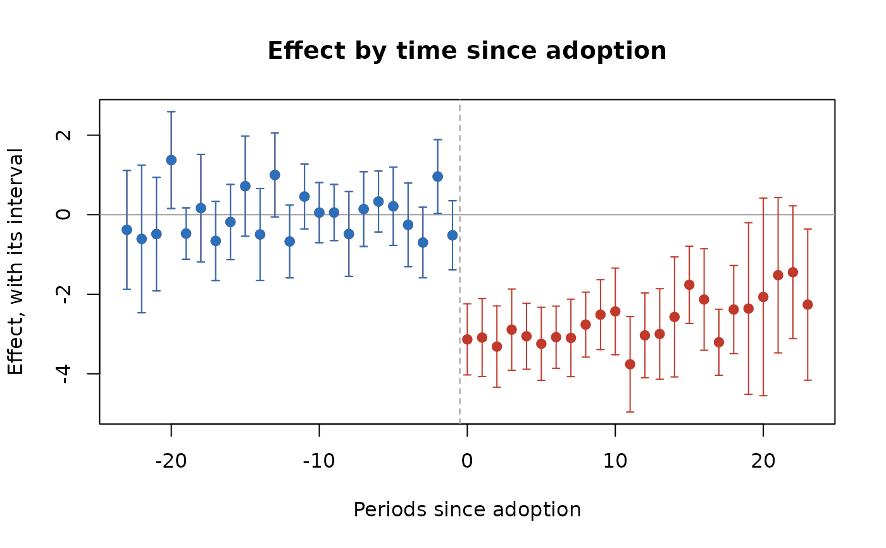

Group-time average treatment effects for staggered adoption, with no unit used as a control after it is treated (Callaway and Sant'Anna 2021), or the extended two-way fixed-effects regression with a coefficient for every cohort and period (Wooldridge 2021); aggregated to one effect and to effects by time since adoption.
Arguments
- data
A data frame, one row per unit and period.
- unit, time, y
Column names: the unit, the period (numeric, for example a year or a month index) and the outcome.
- ftreat
Column name of the period a unit is first treated (
NA, 0 orInffor a unit never treated). Treatment is taken as staying on.- ctrl
"notyet"(default) or"never".- meth
"csa"(default) or"wooldridge".- cl
Column name of the clusters (default the unit), or two column names for two-way clustering (Cameron, Gelbach and Miller 2011): \(V_a + V_b - V_{ab}\), each term with the small-sample factor of the dimension with fewer clusters, and t on its \(G - 1\) degrees of freedom. A composite cluster (district by month, say) is one column made with
interaction(). Fewer than ten clusters give a warning (CR1 errors are unreliable with so few;wcbis made for that case), and so does a cluster that changes within a unit.- reps
Bootstrap replications (default 499; 0 for none).
- seed
Optional seed for the bootstrap.
- conflvl
Confidence level of the intervals reported (default 0.95).
- covs
Optional column names of covariates for conditional parallel trends (
meth = "csa"only).- estmeth
With covariates:
"dr"(doubly robust, default),"ipw"or"reg".
Value
A list of class rmbl_staggered_att: attgt (a data
frame: cohort, period, evtm, estimate,
se, lower, upper, ncoh), overall (one
row: estimate, se, lower, upper),
dynamic (by evtm), method, control,
conflvl. plot() draws the dynamic effects.
Details
Let the cohort \(g\) be the units first treated in period \(g\),
and \(C\) the comparison units: never treated (control = "never"),
or not yet treated by period \(\max(t, g - 1)\) ("notyet", the
default). For meth = "csa", $$ATT(g, t) = \big(\bar Y_{g,t} -
\bar Y_{g,b}\big) - \big(\bar Y_{C,t} - \bar Y_{C,b}\big),$$ with base period \(b = g - 1\) for
\(t \ge g\), and \(b = t - 1\) before (the "varying" base of the
did package), so a pre-period ATT is a placebo of one period. It needs
a balanced panel.
With covs, parallel trends need only hold conditionally on them, and
each \(ATT(g, t)\) is the two-period estimator of Sant'Anna and Zhao (2020)
on the cohort and its comparison units, with the covariates taken at the base
period \(b\) (use covariates fixed before treatment: one the policy moves
is a bad control). With \(\Delta Y = Y_t - Y_b\), \(D\) the cohort
indicator, \(\hat m(X)\) the least-squares fit of \(\Delta Y\) on \(X\)
among the comparison units and \(\hat p(X)\) the logistic propensity of
belonging to the cohort, $$\widehat{ATT}_{dr} = \frac{\sum D (\Delta Y -
\hat m)}{\sum D} - \frac{\sum w (\Delta Y - \hat m)}{\sum w}, \quad w =
\frac{\hat p (1 - D)}{1 - \hat p};$$ estmeth = "ipw" drops
\(\hat m\) (normalised inverse probability weighting) and "reg"
drops the weights (outcome regression). The doubly robust form is consistent
when either the propensity or the outcome model is right. Comparison units
with \(\hat p \ge 0.995\) are trimmed, as the DRDID package does.
These agree with did::attgt() to rounding error.
For meth = "wooldridge", the regression of the outcome on unit and
period effects and an indicator for every treated cohort-period cell, with
never-treated (or last-treated) units as the comparison, gives each
\(ATT(g, t)\) as a coefficient; without covariates it equals the imputation
estimator.
The overall effect averages the post-adoption \(ATT(g, t)\) weighted by
cohort size; the event-time effect \(\theta(e)\) averages \(ATT(g, g +
e)\) over the cohorts observed at \(e\), weighted by cohort size. Standard
errors come from the cluster bootstrap: units (or clusters) are resampled
with replacement reps times and everything recomputed; intervals are
normal with the bootstrap standard error.
References
Callaway B, Sant'Anna PHC (2021). Difference-in-differences with multiple time periods. Journal of Econometrics 225(2):200-230. doi:10.1016/j.jeconom.2020.12.001
Sant'Anna PHC, Zhao J (2020). Doubly robust difference-in-differences estimators. Journal of Econometrics 219(1):101-122. doi:10.1016/j.jeconom.2020.06.003
Wooldridge JM (2021). Two-way fixed effects, the two-way Mundlak regression, and difference-in-differences estimators. doi:10.2139/ssrn.3906345
Applied to a reform rolled out in four stages across judicial districts:
Acosta, Mejia and Zorro Medina (2023), see plndid.
Examples
p <- polex()
s <- stgatt(p, "district", "month", "crmrate", "refmonth", reps = 99,
seed = 1)
s$overall
#> estimate se lower upper
#> 1 -2.825844 0.3400471 -3.492324 -2.159364
head(s$dynamic)
#> evtm estimate se lower upper
#> 1 -23 -0.3805333 0.7617010 -1.873440 1.1123731
#> 2 -22 -0.6088000 0.9469157 -2.464721 1.2471207
#> 3 -21 -0.4860667 0.7276161 -1.912168 0.9400347
#> 4 -20 1.3736000 0.6214022 0.155674 2.5915260
#> 5 -19 -0.4742667 0.3297593 -1.120583 0.1720498
#> 6 -18 0.1654667 0.6897981 -1.186513 1.5174460
plot(s)

# your own panel: eight towns over ten years, four adopting a by-law (two
# in 2019, two in 2021), with each town's population, county and income
own <- data.frame(
town = rep(c("A", "B", "C", "D", "E", "F", "G", "H"), each = 10),
year = rep(2015:2024, times = 8)
)
i <- match(own$town, unique(own$town))
own$first <- c(2019, 2019, 2021, 2021, NA, NA, NA, NA)[i]
own$bylaw <- as.integer(!is.na(own$first) & own$year >= own$first)
own$pop <- c(12, 30, 8, 22, 15, 40, 9, 18)[i] * 1000
own$county <- rep(c("North", "South"), 4)[i]
own$income <- 50 + own$year - 2015 + cos(seq_len(80))
own$rate <- 30 + i + 0.5 * (own$year - 2015) - 4 * own$bylaw +
0.2 * own$income + sin(seq_len(80))
# each adoption cohort against the towns not yet treated
stgatt(own, "town", "year", "rate", "first", reps = 49, seed = 1)$overall
#> estimate se lower upper
#> 1 -3.89384 0.8365213 -5.533391 -2.254288